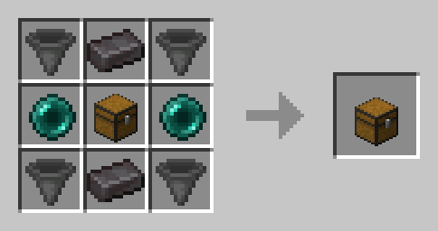

Master SDC
Master SDC (Salle Des Coffres) trie tes items à ta place. Tu déposes tout dans un seul coffre, l'Alpha, et chaque item part automatiquement dans le coffre Bêta dont le filtre correspond.
Items déposés → [ Coffre ALPHA ] → Bêta « Cobblestone »
→ Bêta « Minerais »
→ Bêta « Default » (le reste)Bon à savoir Chaque joueur a une seule salle des coffres. Elle peut contenir plusieurs coffres Alpha (selon ton niveau) et de nombreux coffres Bêta (selon ton niveau ou ton grade).
🚀 Démarrage rapide
- Fabrique un coffre Alpha et pose-le.
- Pose un coffre simple ou double pour ton premier Bêta, dans le rayon d'action de l'Alpha (250 blocs).
- Tape
/sdc create beta <pseudo> COBBLESTONE, puis fais un clic droit sur ce coffre. - Dépose de la cobblestone dans l'Alpha : elle part toute seule dans le Bêta.
<pseudo> : [À COMPLÉTER : ton pseudo ou celui du propriétaire de la salle].
Les items s'écrivent avec leur identifiant anglais en majuscules (COBBLESTONE, IRON_INGOT, OAK_LOG…).
📊 Les limites
Coffres Alpha
Coffres Bêta
Le rayon d'action d'un coffre Alpha est de 250 blocs.
Le coffre Alpha
Le coffre Alpha est le point d'entrée de ta salle des coffres : c'est celui dans lequel tu déposes les items à trier. Pour le fabriquer, utilise cette recette :

Les coffres Bêta
Les coffres Bêta sont les coffres de sortie : c'est là que les items sont triés. Un coffre Bêta peut avoir un ou plusieurs filtres. Pose d'abord un coffre simple ou double, puis choisis une méthode :
Avec les items dans la commande
/sdc create beta <pseudo> <item> Sépare les items par un espace pour mettre plusieurs filtres à la fois, puis fais un clic droit sur le coffre.
Exemple :
/sdc create beta Steve COBBLESTONE COBBLESTONE_SLABAvec l'item en main
/sdc create beta <pseudo>Tiens en main l'item à trier, puis fais un clic droit sur le coffre.
Coffre « Default » Si tu ne tiens aucun item lors du clic, le coffre devient un coffre Default : il reçoit tous les items qui ne correspondent à aucun autre filtre.
Avec le contenu du coffre
/sdc create beta <pseudo> @autoTous les items déjà présents dans le coffre deviennent ses filtres.
Gérer les filtres
Ajouter un filtre
Tu peux ajouter un filtre à un coffre Bêta qui en a déjà, de trois façons :
Supprimer un filtre
Partager ta salle des coffres
Tu peux donner accès à ta salle des coffres à un autre joueur. Il pourra la modifier.
Retrouver les infos d'un coffre
Tape /sdc info, puis fais un clic droit sur un coffre.
Toutes ces commandes sont aussi disponibles en jeu avec /sdc help.
❓ Foire aux questions
-
Puis-je avoir plusieurs salles des coffres ? Non, une seule salle des coffres est disponible par joueur. En revanche, elle peut contenir jusqu'à 6 coffres Alpha.
-
Quel est le rayon d'action du coffre Alpha ? Un coffre Alpha trie les items jusqu'à 250 blocs autour de lui.
-
Y a-t-il une limite de coffres Bêta ? Oui. Tu débloques 20 coffres Bêta par niveau de joueur. Le grade VIP en donne 250 d'emblée, le grade Master 1000, qui est le maximum.
-
Puis-je supprimer mon coffre Alpha ? Non, pas tant qu'il reste des coffres Bêta dans la même salle des coffres : supprime d'abord tous les Bêta.
-
Puis-je avoir plusieurs coffres avec les mêmes filtres ? Oui. L'Alpha envoie les items en priorité vers le premier coffre créé. Quand celui-ci est plein, il envoie les items vers le second.
-
Les items renommés sont-ils triés ? Oui. Le tri se fait selon l'identifiant de l'item, donc un papier renommé (à l'enclume ou via un plugin) ira quand même dans le coffre à papier.
-
Que se passe-t-il quand un coffre Bêta est plein ? Quand un coffre Bêta est plein, le surplus est redirigé vers un coffre default.
-
Puis-je utiliser des entonnoirs avec l'Alpha ? Oui ! Vous pouvez relier un entonnoir à un coffre alpha et les items seront bien triés automatiquement.